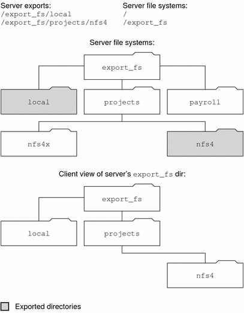

Previous
Previous
Features in NFS Version 4
Many changes have been made to NFS in version 4. This section provides descriptions of these new features.
Note - Starting in the Solaris 10 release, NFS version 4 does not support the LIPKEY/SPKM security flavor. Also, NFS version 4 does not use the mountd, nfslogd, and statd daemons.
For procedural information related to using NFS version 4, refer to Setting Up NFS Services.
Unsharing and Resharing a File System in NFS Version 4
With both NFS version 3 and version 4, if a client attempts to access a file system that has been unshared, the server responds with an error code. However, with NFS version 3 the server maintains any locks that the clients had obtained before the file system was unshared. Thus, when the file system is reshared, NFS version 3 clients can access the file system as though that file system had never been unshared.
With NFS version 4, when a file system is unshared, all the state for any open files or file locks in that file system is destroyed. If the client attempts to access these files or locks, the client receives an error. This error is usually reported as an I/O error to the application. Note, however, that resharing a currently shared file system to change options does not destroy any of the state on the server.
For related information, refer to Client Recovery in NFS Version 4 or see the unshare_nfs(1M) man page.
File-System Namespace in NFS Version 4
NFS version 4 servers create and maintain a pseudo-file system, which provides clients with seamless access to all exported objects on the server. Prior to NFS version 4, the pseudo-file system did not exist. Clients were forced to mount each shared server file system for access. Consider the following example.
Figure 6-2 Views of the Server File System and the Client File SystemNote that the client cannot see the payroll directory and the nfs4x directory, because these directories are not exported and do not lead to exported directories. However, the local directory is visible to the client, because local is an exported directory. The projects directory is visible to the client, because projects leads to the exported directory, nfs4. Thus, portions of the server namespace that are not explicitly exported are bridged with a pseudo-file system that views only the exported directories and those directories that lead to server exports.
A pseudo-file system is a structure that contains only directories and is created by the server. The pseudo-file system permits a client to browse the hierarchy of exported file systems. Thus, the client's view of the pseudo-file system is limited to paths that lead to exported file systems.
Previous versions of NFS did not permit a client to traverse server file systems without mounting each file system. However, in NFS version 4, the server namespace does the following:
Restricts the client's file-system view to directories that lead to server exports.
Provides clients with seamless access to server exports without requiring that the client mount each underlying file system. See the previous example. Note, however, that different operating systems might require the client to mount each server file system.
For POSIX-related reasons, the Solaris NFS version 4 client does not cross server file-system boundaries. When such attempts are made, the client makes the directory appear to be empty. To remedy this situation, you must perform a mount for each of the server's file systems.
Volatile File Handles in NFS Version 4
File handles are created on the server and contain information that uniquely identifies files and directories. In NFS versions 2 and 3 the server returned persistent file handles. Thus, the client could guarantee that the server would generate a file handle that always referred to the same file. For example:
If a file was deleted and replaced with a file of the same name, the server would generate a new file handle for the new file. If the client used the old file handle, the server would return an error that the file handle was stale.
If a file was renamed, the file handle would remain the same.
If you had to reboot the server, the file handles would remain the same.
Thus, when the server received a request from a client that included a file handle, the resolution was straightforward and the file handle always referred to the correct file.
This method of identifying files and directories for NFS operations was fine for most UNIX-based servers. However, the method could not be implemented on servers that relied on other methods of identification, such as a file's path name. To resolve this problem, the NFS version 4 protocol permits a server to declare that its file handles are volatile. Thus, a file handle could change. If the file handle does change, the client must find the new file handle.
Like NFS versions 2 and 3, the Solaris NFS version 4 server always provides persistent file handles. However, Solaris NFS version 4 clients that access non-Solaris NFS version 4 servers must support volatile file handles if the server uses them. Specifically, when the server tells the client that the file handle is volatile, the client must cache the mapping between path name and file handle. The client uses the volatile file handle until it expires. On expiration, the client does the following:
Flushes the cached information that refers to that file handle
Searches for that file's new file handle
Retries the operation
Note - The server always tells the client which file handles are persistent and which file handles are volatile.
Volatile file handles might expire for any of these reasons:
When you close a file
When the filehandle's file system migrates
When a client renames a file
When the server reboots
Note that if the client is unable to find the new file handle, an error message is put in the syslog file. Further attempts to access this file fail with an I/O error.
Client Recovery in NFS Version 4
The NFS version 4 protocol is a stateful protocol. A protocol is stateful when both the client and the server maintain current information about the following.
Open files
File locks
When a failure occurs, such as a server crash, the client and the server work together to reestablish the open and lock states that existed prior to the failure.
When a server crashes and is rebooted, the server loses its state. The client detects that the server has rebooted and begins the process of helping the server rebuild its state. This process is known as client recovery, because the client directs the process.
When the client discovers that the server has rebooted, the client immediately suspends its current activity and begins the process of client recovery. When the recovery process starts, a message, such as the following, is displayed in the system error log /var/adm/messages.
NOTICE: Starting recovery server basil.example.company.com
During the recovery process, the client sends the server information about the client's previous state. Note, however, that during this period the client does not send any new requests to the server. Any new requests to open files or set file locks must wait for the server to complete its recovery period before proceeding.
When the client recovery process is complete, the following message is displayed in the system error log /var/adm/messages.
NOTICE: Recovery done for server basil.example.company.com
Now the client has successfully completed sending its state information to the server. However, even though the client has completed this process, other clients might not have completed their process of sending state information to the server. Therefore, for a period of time, the server does not accept any open or lock requests. This period of time, which is known as the grace period, is designated to permit all the clients to complete their recovery.
During the grace period, if the client attempts to open any new files or establish any new locks, the server denies the request with the GRACE error code. On receiving this error, the client must wait for the grace period to end and then resend the request to the server. During the grace period the following message is displayed.
NFS server recovering
Note that during the grace period the commands that do not open files or set file locks can proceed. For example, the commands ls and cd do not open a file or set a file lock. Thus, these commands are not suspended. However, a command such as cat, which opens a file, would be suspended until the grace period ends.
When the grace period has ended, the following message is displayed.
NFS server recovery ok.
The client can now send new open and lock requests to the server.
Client recovery can fail for a variety of reasons. For example, if a network partition exists after the server reboots, the client might not be able to reestablish its state with the server before the grace period ends. When the grace period has ended, the server does not permit the client to reestablish its state because new state operations could create conflicts. For example, a new file lock might conflict with an old file lock that the client is trying to recover. When such situations occur, the server returns the NO_GRACE error code to the client.
If the recovery of an open operation for a particular file fails, the client marks the file as unusable and the following message is displayed.
WARNING: The following NFS file could not be recovered and was marked dead (can't reopen: NFS status 70): file : filename
Note that the number 70 is only an example.
If reestablishing a file lock during recovery fails, the following error message is posted.
NOTICE: nfs4_send_siglost: pid PROCESS-ID lost lock on server SERVER-NAME
In this situation, the SIGLOST signal is posted to the process. The default action for the SIGLOST signal is to terminate the process.
For you to recover from this state, you must restart any applications that had files open at the time of the failure. Note that the following can occur.
Some processes that did not reopen the file could receive I/O errors.
Other processes that did reopen the file, or performed the open operation after the recovery failure, are able to access the file without any problems.
Thus, some processes can access a particular file while other processes cannot.